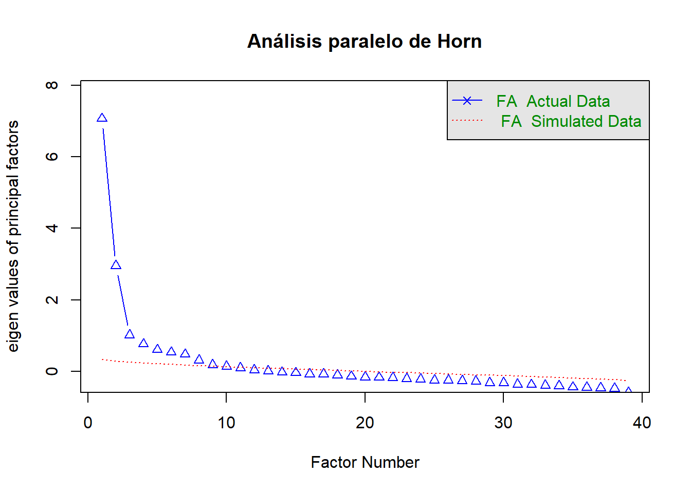

library(tidyverse)
library(lavaan)
library(here)
library(gt)Análisis Factorial Exploratorio y Confirmatorio de las Baterías
generar_tabla_cfa <- function(fit, archivo_salida, titulo = "Variables") {
cargas <- standardizedSolution(fit) %>%
filter(op == "=~") %>%
select(factor = lhs, item = rhs, loading = est.std)
factores <- unique(cargas$factor)
tabla_cargas <- cargas %>%
pivot_wider(names_from = factor, values_from = loading) %>%
select(item, all_of(factores))
r2 <- lavInspect(fit, "rsquare")
comunalidad <- tibble(
item = names(r2),
Communality = as.numeric(r2),
Uniqueness = 1 - as.numeric(r2)
)
tabla_cargas <- tabla_cargas %>%
left_join(comunalidad, by = "item")
n_items_total <- n_distinct(cargas$item)
varianza <- cargas %>%
group_by(factor) %>%
summarise(pct_varianza = 100 * sum(loading^2) / n_items_total, .groups = "drop") %>%
mutate(pct_acumulada = cumsum(pct_varianza))
fila_varianza <- varianza %>%
select(factor, pct_varianza) %>%
pivot_wider(names_from = factor, values_from = pct_varianza) %>%
mutate(item = "% de varianza explicada", .before = 1)
fila_acumulada <- varianza %>%
select(factor, pct_acumulada) %>%
pivot_wider(names_from = factor, values_from = pct_acumulada) %>%
mutate(item = "% de varianza acumulada", .before = 1)
tabla_final <- bind_rows(tabla_cargas, fila_varianza, fila_acumulada)
tabla_final_gt <- tabla_final %>%
gt::gt(rowname_col = "item") %>%
gt::tab_header(title = titulo) %>%
gt::fmt_number(columns = everything(), decimals = 2) %>%
gt::sub_missing(columns = everything(), missing_text = "") %>%
gt::tab_footnote(
footnote = "Reactivos invertidos",
locations = gt::cells_stub(rows = item %in% c("O4_4", "O4_7", "O4_10"))
) %>%
gt::cols_label(item = "-")
dir.create(dirname(archivo_salida), recursive = TRUE, showWarnings = FALSE)
gt::gtsave(tabla_final_gt, archivo_salida)
tabla_final_gt
}Introducción
En este notebook se desarrolla el proceso de construcción y validación de la estructura factorial de las baterías de consumo. El procedimiento considera tanto técnicas exploratorias como confirmatorias para identificar la dimensionalidad subyacente de los ítems y evaluar la calidad psicométrica del instrumento.
Dado que los ítems corresponden a escalas ordinales tipo Likert, todas las estimaciones factoriales utilizan matrices de correlaciones policóricas y estimadores robustos apropiados para variables categóricas ordenadas.
El flujo de trabajo es el siguiente:
- Limpieza y preparación de los datos.
- Evaluación de la adecuación muestral mediante KMO y Bartlett.
- Selección de indicadores utilizando el índice MSA.
- Determinación del número de factores mediante análisis paralelo.
- Exploración factorial utilizando matrices policóricas.
- Confirmación de la estructura mediante modelos CFA sucesivamente reespecificados.
- Comparación entre distintas soluciones factoriales con el objetivo de identificar el modelo más parsimonioso, interpretable y con mejores índices de ajuste.
1. Carga de datos
Se carga la base de datos previamente procesada que contiene únicamente las variables correspondientes a las baterías de interés.
baterias <- readRDS(here::here("input", "data_procesada.rds"))2. Preparación de los datos
Antes de realizar los análisis factoriales se eliminan las observaciones con datos faltantes y todas las variables son convertidas explícitamente a variables ordinales.
Posteriormente se calcula la matriz de correlaciones policóricas, la cual constituye la base para los análisis exploratorios posteriores.
baterias_limpio <- baterias %>%
drop_na() %>%
mutate(across(everything(), ~ as.ordered(as.numeric(.))))
matriz_poly_baterias <- psych::polychoric(baterias_limpio)$rhoEvaluación de la adecuación muestral
Como medida preliminar de la factibilidad del análisis factorial se calcula el índice Kaiser-Meyer-Olkin (KMO). Debido a que esta prueba se encuentra implementada sobre matrices de correlación convencionales, las variables se transforman temporalmente a formato numérico y se utiliza una matriz de correlaciones de Pearson.
baterias_continuas <- baterias_limpio %>%
mutate(across(everything(), as.numeric))
matriz_cor_continua <- cor(baterias_continuas)
kmo_baterias <- psych::KMO(matriz_cor_continua)
kmo_bateriasKaiser-Meyer-Olkin factor adequacy
Call: psych::KMO(r = matriz_cor_continua)
Overall MSA = 0.88
MSA for each item =
O1_1 O1_2 O1_3 O1_4 O1_5 O1_6 O1_7 O1_8 O1_9 O1_10 O2_1 O2_2 O2_3
0.73 0.82 0.70 0.74 0.77 0.89 0.87 0.93 0.80 0.90 0.88 0.89 0.91
O2_4 O2_5 O2_6 O2_7 O2_8 O2_9 O2_10 O2_11 O2_12 O2_13 O2_14 O3_1 O3_2
0.91 0.91 0.89 0.94 0.88 0.91 0.94 0.95 0.95 0.94 0.88 0.90 0.92
O3_3 O3_4 O3_5 O3_6 O3_7 O3_8 O3_9 O3_10 O4_1 O4_2 O4_3 O4_4 O4_5
0.92 0.90 0.88 0.87 0.94 0.86 0.86 0.76 0.82 0.77 0.70 0.91 0.70
O4_6 O4_7 O4_8 O4_9 O4_10 O4_11 O4_12
0.84 0.77 0.80 0.56 0.80 0.72 0.75 3. Selección de ítems mediante MSA
Una vez obtenido el índice KMO, se revisa el valor individual de adecuación muestral (MSA) para cada ítem.
Se conservan únicamente aquellas variables cuyo valor MSA es igual o superior a 0.75, siguiendo un criterio relativamente estricto para asegurar una adecuada comunalidad entre los indicadores.
msa_por_item <- kmo_baterias$MSAi
items_msa_075 <- sort(
msa_por_item[msa_por_item >= 0.75],
decreasing = TRUE
)
baterias_msa_075 <- baterias %>%
select(any_of(names(items_msa_075)))
items_msa_075 O2_12 O2_11 O2_7 O2_10 O2_13 O3_7 O1_8 O3_3
0.9512233 0.9472813 0.9443097 0.9428593 0.9410052 0.9400348 0.9265837 0.9208225
O3_2 O2_3 O2_4 O2_5 O2_9 O4_4 O3_4 O3_1
0.9174333 0.9124257 0.9119816 0.9080834 0.9050823 0.9050046 0.9046283 0.9044563
O1_10 O2_2 O1_6 O2_6 O2_14 O2_1 O2_8 O3_5
0.8964230 0.8930986 0.8905198 0.8893950 0.8845521 0.8836520 0.8827510 0.8812891
O3_6 O1_7 O3_9 O3_8 O4_6 O1_2 O4_1 O1_9
0.8717136 0.8692726 0.8626700 0.8615579 0.8417395 0.8240780 0.8192020 0.8030517
O4_10 O4_8 O4_2 O4_7 O1_5 O3_10 O4_12
0.8014751 0.7966480 0.7696498 0.7665454 0.7661281 0.7570215 0.7502277 baterias_msa_075# A tibble: 1,623 × 39
O2_12 O2_11 O2_7 O2_10 O2_13 O3_7 O1_8 O3_3 O3_2 O2_3 O2_4 O2_5 O2_9
<ord> <ord> <ord> <ord> <ord> <ord> <ord> <ord> <ord> <ord> <ord> <ord> <ord>
1 A ve… A ve… A ve… A ve… A ve… A ve… A ve… Siem… A ve… La m… Siem… A ve… A ve…
2 Nunca Rara… Nunca Siem… Rara… Rara… Nunca A ve… Nunca Siem… Siem… Rara… Nunca
3 A ve… A ve… A ve… La m… A ve… La m… La m… A ve… Nunca La m… A ve… La m… Siem…
4 A ve… La m… A ve… A ve… La m… La m… La m… La m… La m… Siem… Siem… A ve… Rara…
5 A ve… A ve… La m… La m… Rara… A ve… Rara… Nunca Rara… A ve… A ve… A ve… Rara…
6 Rara… A ve… La m… A ve… Rara… A ve… Rara… Rara… A ve… A ve… Siem… A ve… Siem…
7 Rara… A ve… A ve… La m… Nunca A ve… Nunca Nunca Nunca La m… La m… Siem… A ve…
8 La m… A ve… La m… La m… Siem… A ve… Rara… Rara… A ve… Siem… Siem… Siem… La m…
9 La m… La m… Siem… La m… A ve… Siem… Rara… Rara… A ve… La m… Siem… La m… La m…
10 A ve… A ve… La m… La m… La m… La m… A ve… Rara… A ve… La m… Siem… La m… A ve…
# ℹ 1,613 more rows
# ℹ 26 more variables: O4_4 <dbl>, O3_4 <ord>, O3_1 <ord>, O1_10 <ord>,
# O2_2 <ord>, O1_6 <ord>, O2_6 <ord>, O2_14 <ord>, O2_1 <ord>, O2_8 <ord>,
# O3_5 <ord>, O3_6 <ord>, O1_7 <ord>, O3_9 <ord>, O3_8 <ord>, O4_6 <ord>,
# O1_2 <ord>, O4_1 <ord>, O1_9 <ord>, O4_10 <dbl>, O4_8 <ord>, O4_2 <ord>,
# O4_7 <dbl>, O1_5 <ord>, O3_10 <ord>, O4_12 <ord>Posteriormente se genera una versión limpia del subconjunto seleccionado y se almacena para garantizar la reproducibilidad del análisis.
baterias_msa_075_limpio <- baterias_msa_075 %>%
drop_na() %>%
mutate(across(everything(), ~ as.ordered(as.numeric(.))))
archivo_baterias_msa_075_limpio <- here::here(
"input",
"data",
"baterias_msa_075_limpio.rds"
)
# Crear la carpeta si no existe
dir.create(
dirname(archivo_baterias_msa_075_limpio),
recursive = TRUE,
showWarnings = FALSE
)
# Guardar únicamente si el archivo no existe
if (!file.exists(archivo_baterias_msa_075_limpio)) {
saveRDS(
baterias_msa_075_limpio,
file = archivo_baterias_msa_075_limpio
)
}
variables_msa_075 <- colnames(baterias_msa_075_limpio)4. Diagnósticos del subconjunto seleccionado
Matriz de correlaciones policóricas
Se calcula nuevamente la matriz policórica utilizando únicamente los ítems retenidos.
matriz_poly_baterias_075 <-
psych::polychoric(
baterias_msa_075_limpio
)$rho
dimnames(matriz_poly_baterias_075) <-
list(
variables_msa_075,
variables_msa_075
)Prueba de esfericidad de Bartlett
La prueba de Bartlett evalúa la hipótesis nula de que la matriz de correlaciones corresponde a una matriz identidad.
Un resultado significativo indica que existe suficiente asociación entre las variables para justificar un análisis factorial.
bartlett_baterias_075 <-
psych::cortest.bartlett(
matriz_poly_baterias_075,
n = nrow(baterias_msa_075_limpio)
)
bartlett_baterias_075$chisq
[1] 19254.35
$p.value
[1] 0
$df
[1] 741Valores propios
Se inspeccionan los valores propios de la matriz policórica como una primera aproximación al número de dimensiones latentes.
eigenvalues_poly_baterias_075 <-
eigen(
matriz_poly_baterias_075,
only.values = TRUE
)$values
eigenvalues_poly_baterias_075 [1] 7.8057861 3.8078479 1.8656834 1.6361657 1.4199481 1.3672957 1.3463263
[8] 1.1467542 1.0131214 0.9267649 0.9097879 0.8404579 0.8324078 0.8135557
[15] 0.7890526 0.7726257 0.7083285 0.7065197 0.6806477 0.6614950 0.6336076
[22] 0.6130619 0.5963361 0.5856514 0.5793631 0.5544704 0.5397245 0.5319647
[29] 0.4817053 0.4696579 0.4604583 0.4454766 0.4216716 0.4111729 0.3933976
[36] 0.3620844 0.3086951 0.2924824 0.2684460Análisis paralelo de Horn
Finalmente se utiliza el análisis paralelo de Horn para estimar empíricamente el número óptimo de factores a retener.
Este procedimiento compara los valores propios observados con aquellos obtenidos a partir de matrices aleatorias del mismo tamaño.
archivo_horn <- here::here(
"output",
"graphs",
"analisis_paralelo_horn_baterias_075.png"
)
# Crear la carpeta de salida si no existe
dir.create(
dirname(archivo_horn),
recursive = TRUE,
showWarnings = FALSE
)
# Exportar el gráfico solo si aún no existe
if (!file.exists(archivo_horn)) {
png(
filename = archivo_horn,
width = 1800,
height = 1400,
res = 300
)
psych::fa.parallel(
matriz_poly_baterias_075,
n.obs = nrow(baterias_msa_075_limpio),
fa = "fa",
fm = "minres",
main = "Análisis paralelo de Horn"
)
dev.off()
}
# Mostrar el gráfico en el documento Quarto
horn_baterias_075 <-
psych::fa.parallel(
matriz_poly_baterias_075,
n.obs = nrow(baterias_msa_075_limpio),
fa = "fa",
fm = "minres",
main = "Análisis paralelo de Horn"
)
Parallel analysis suggests that the number of factors = 10 and the number of components = NA 5. Análisis Factorial Exploratorio mediante lavaan
Como complemento al análisis exploratorio clásico se estima un modelo EFA utilizando el enfoque ESEM implementado en lavaan.
Se especifican tres factores, utilizando el estimador WLSMV y rotación Varimax.
items_baterias_075 <- variables_msa_075
factores_efa_lavaan <-
paste0(
'efa("efa1")*F',
1:3,
collapse = " + "
)
modelo_efa_lavaan_075 <-
paste0(
factores_efa_lavaan,
" =~ ",
paste(items_baterias_075, collapse = " + ")
)
fit_efa_lavaan_075 <-
lavaan::sem(
modelo_efa_lavaan_075,
data = baterias_msa_075_limpio,
ordered = TRUE,
estimator = "WLSMV",
rotation = "varimax",
std.lv = TRUE
)
summary(
fit_efa_lavaan_075,
fit.measures = TRUE,
standardized = TRUE
)lavaan 0.6-21 ended normally after 72 iterations
Estimator DWLS
Optimization method NLMINB
Number of model parameters 254
Row rank of the constraints matrix 3
Rotation method VARIMAX ORTHOGONAL
Rotation algorithm (rstarts) GPA (30)
Standardized metric TRUE
Row weights Kaiser
Number of observations 1623
Model Test User Model:
Standard Scaled
Test Statistic 2781.066 3545.545
Degrees of freedom 627 627
P-value (Unknown) NA 0.000
Scaling correction factor 0.823
Shift parameter 167.523
simple second-order correction
Model Test Baseline Model:
Test statistic 54323.604 24760.559
Degrees of freedom 741 741
P-value NA 0.000
Scaling correction factor 2.231
User Model versus Baseline Model:
Comparative Fit Index (CFI) 0.960 0.878
Tucker-Lewis Index (TLI) 0.952 0.856
Robust Comparative Fit Index (CFI) 0.793
Robust Tucker-Lewis Index (TLI) 0.755
Root Mean Square Error of Approximation:
RMSEA 0.046 0.054
90 Percent confidence interval - lower 0.044 0.052
90 Percent confidence interval - upper 0.048 0.055
P-value H_0: RMSEA <= 0.050 1.000 0.000
P-value H_0: RMSEA >= 0.080 0.000 0.000
Robust RMSEA 0.062
90 Percent confidence interval - lower 0.059
90 Percent confidence interval - upper 0.064
P-value H_0: Robust RMSEA <= 0.050 0.000
P-value H_0: Robust RMSEA >= 0.080 0.000
Standardized Root Mean Square Residual:
SRMR 0.047 0.047
Parameter Estimates:
Parameterization Delta
Standard errors Robust.sem
Information Expected
Information saturated (h1) model Unstructured
Latent Variables:
Estimate Std.Err z-value P(>|z|) Std.lv Std.all
F1 =~ efa1
O2_12 0.490 0.022 22.780 0.000 0.490 0.490
O2_11 0.515 0.021 24.842 0.000 0.515 0.515
O2_7 0.297 0.024 12.368 0.000 0.297 0.297
O2_10 0.383 0.023 16.998 0.000 0.383 0.383
O2_13 0.487 0.021 23.428 0.000 0.487 0.487
O3_7 0.552 0.019 28.695 0.000 0.552 0.552
O1_8 0.447 0.023 19.392 0.000 0.447 0.447
O3_3 0.697 0.017 40.535 0.000 0.697 0.697
O3_2 0.622 0.018 33.958 0.000 0.622 0.622
O2_3 0.030 0.025 1.215 0.225 0.030 0.030
O2_4 -0.058 0.027 -2.134 0.033 -0.058 -0.058
O2_5 0.080 0.024 3.395 0.001 0.080 0.080
O2_9 0.337 0.025 13.606 0.000 0.337 0.337
O4_4 -0.149 0.026 -5.755 0.000 -0.149 -0.149
O3_4 0.626 0.019 33.386 0.000 0.626 0.626
O3_1 0.528 0.020 26.522 0.000 0.528 0.528
O1_10 0.232 0.025 9.255 0.000 0.232 0.232
O2_2 -0.056 0.027 -2.049 0.040 -0.056 -0.056
O1_6 0.400 0.026 15.640 0.000 0.400 0.400
O2_6 0.371 0.025 14.788 0.000 0.371 0.371
O2_14 0.029 0.026 1.138 0.255 0.029 0.029
O2_1 -0.129 0.028 -4.605 0.000 -0.129 -0.129
O2_8 0.102 0.026 3.969 0.000 0.102 0.102
O3_5 0.587 0.021 27.995 0.000 0.587 0.587
O3_6 0.309 0.023 13.174 0.000 0.309 0.309
O1_7 0.221 0.025 9.025 0.000 0.221 0.221
O3_9 0.589 0.022 27.009 0.000 0.589 0.589
O3_8 0.771 0.021 36.402 0.000 0.771 0.771
O4_6 -0.242 0.025 -9.730 0.000 -0.242 -0.242
O1_2 0.381 0.028 13.387 0.000 0.381 0.381
O4_1 0.085 0.024 3.557 0.000 0.085 0.085
O1_9 0.116 0.026 4.436 0.000 0.116 0.116
O4_10 -0.052 0.025 -2.113 0.035 -0.052 -0.052
O4_8 0.040 0.024 1.682 0.092 0.040 0.040
O4_2 -0.013 0.021 -0.607 0.544 -0.013 -0.013
O4_7 0.028 0.026 1.109 0.268 0.028 0.028
O1_5 0.219 0.025 8.613 0.000 0.219 0.219
O3_10 0.009 0.024 0.351 0.726 0.009 0.009
O4_12 0.052 0.024 2.177 0.029 0.052 0.052
F2 =~ efa1
O2_12 0.360 0.024 14.865 0.000 0.360 0.360
O2_11 0.333 0.024 13.792 0.000 0.333 0.333
O2_7 0.383 0.024 16.097 0.000 0.383 0.383
O2_10 0.451 0.022 20.323 0.000 0.451 0.451
O2_13 0.325 0.025 13.035 0.000 0.325 0.325
O3_7 0.326 0.025 13.258 0.000 0.326 0.326
O1_8 0.124 0.027 4.595 0.000 0.124 0.124
O3_3 0.059 0.026 2.291 0.022 0.059 0.059
O3_2 0.025 0.027 0.926 0.354 0.025 0.025
O2_3 0.516 0.022 23.299 0.000 0.516 0.516
O2_4 0.517 0.027 19.149 0.000 0.517 0.517
O2_5 0.521 0.022 23.546 0.000 0.521 0.521
O2_9 0.404 0.024 16.715 0.000 0.404 0.404
O4_4 -0.168 0.028 -6.016 0.000 -0.168 -0.168
O3_4 0.181 0.025 7.392 0.000 0.181 0.181
O3_1 0.267 0.024 11.051 0.000 0.267 0.267
O1_10 0.500 0.022 23.129 0.000 0.500 0.500
O2_2 0.538 0.026 20.514 0.000 0.538 0.538
O1_6 0.076 0.029 2.658 0.008 0.076 0.076
O2_6 0.213 0.027 7.956 0.000 0.213 0.213
O2_14 0.400 0.025 15.709 0.000 0.400 0.400
O2_1 0.621 0.026 23.599 0.000 0.621 0.621
O2_8 0.691 0.018 38.425 0.000 0.691 0.691
O3_5 0.012 0.028 0.443 0.658 0.012 0.012
O3_6 0.307 0.025 12.139 0.000 0.307 0.307
O1_7 0.367 0.024 15.136 0.000 0.367 0.367
O3_9 -0.107 0.030 -3.522 0.000 -0.107 -0.107
O3_8 -0.168 0.036 -4.634 0.000 -0.168 -0.168
O4_6 -0.019 0.024 -0.766 0.443 -0.019 -0.019
O1_2 -0.097 0.031 -3.190 0.001 -0.097 -0.097
O4_1 -0.186 0.028 -6.754 0.000 -0.186 -0.186
O1_9 0.343 0.027 12.776 0.000 0.343 0.343
O4_10 -0.280 0.026 -10.793 0.000 -0.280 -0.280
O4_8 -0.157 0.028 -5.590 0.000 -0.157 -0.157
O4_2 -0.006 0.024 -0.257 0.797 -0.006 -0.006
O4_7 -0.252 0.029 -8.804 0.000 -0.252 -0.252
O1_5 0.215 0.027 7.978 0.000 0.215 0.215
O3_10 0.267 0.027 9.885 0.000 0.267 0.267
O4_12 -0.132 0.028 -4.786 0.000 -0.132 -0.132
F3 =~ efa1
O2_12 0.225 0.027 8.306 0.000 0.225 0.225
O2_11 0.169 0.026 6.464 0.000 0.169 0.169
O2_7 0.213 0.027 7.756 0.000 0.213 0.213
O2_10 0.153 0.028 5.539 0.000 0.153 0.153
O2_13 0.029 0.026 1.119 0.263 0.029 0.029
O3_7 0.151 0.026 5.724 0.000 0.151 0.151
O1_8 0.072 0.029 2.531 0.011 0.072 0.072
O3_3 0.032 0.026 1.215 0.224 0.032 0.032
O3_2 -0.016 0.027 -0.609 0.542 -0.016 -0.016
O2_3 0.170 0.030 5.613 0.000 0.170 0.170
O2_4 0.245 0.032 7.627 0.000 0.245 0.245
O2_5 0.196 0.028 6.875 0.000 0.196 0.196
O2_9 -0.036 0.026 -1.371 0.170 -0.036 -0.036
O4_4 -0.424 0.024 -17.510 0.000 -0.424 -0.424
O3_4 0.318 0.026 12.398 0.000 0.318 0.318
O3_1 0.359 0.026 14.055 0.000 0.359 0.359
O1_10 0.014 0.027 0.509 0.611 0.014 0.014
O2_2 0.213 0.034 6.324 0.000 0.213 0.213
O1_6 0.126 0.031 4.064 0.000 0.126 0.126
O2_6 0.594 0.022 27.238 0.000 0.594 0.594
O2_14 0.105 0.029 3.665 0.000 0.105 0.105
O2_1 0.246 0.032 7.593 0.000 0.246 0.246
O2_8 0.043 0.028 1.545 0.122 0.043 0.043
O3_5 -0.099 0.030 -3.301 0.001 -0.099 -0.099
O3_6 0.054 0.027 2.044 0.041 0.054 0.054
O1_7 0.058 0.027 2.150 0.032 0.058 0.058
O3_9 -0.106 0.030 -3.554 0.000 -0.106 -0.106
O3_8 -0.205 0.034 -6.000 0.000 -0.205 -0.205
O4_6 -0.678 0.020 -34.077 0.000 -0.678 -0.678
O1_2 0.020 0.030 0.673 0.501 0.020 0.020
O4_1 -0.467 0.024 -19.828 0.000 -0.467 -0.467
O1_9 -0.044 0.027 -1.606 0.108 -0.044 -0.044
O4_10 -0.138 0.028 -4.957 0.000 -0.138 -0.138
O4_8 -0.372 0.026 -14.211 0.000 -0.372 -0.372
O4_2 -0.251 0.027 -9.239 0.000 -0.251 -0.251
O4_7 -0.189 0.030 -6.305 0.000 -0.189 -0.189
O1_5 -0.048 0.028 -1.684 0.092 -0.048 -0.048
O3_10 0.074 0.028 2.630 0.009 0.074 0.074
O4_12 -0.317 0.026 -11.980 0.000 -0.317 -0.317
Covariances:
Estimate Std.Err z-value P(>|z|) Std.lv Std.all
F1 ~~
F2 -0.000 -0.000 -0.000
F3 -0.000 -0.000 -0.000
F2 ~~
F3 -0.000 -0.000 -0.000
Thresholds:
Estimate Std.Err z-value P(>|z|) Std.lv Std.all
O2_12|t1 -1.479 0.047 -31.285 0.000 -1.479 -1.479
O2_12|t2 -0.587 0.033 -17.716 0.000 -0.587 -0.587
O2_12|t3 0.785 0.035 22.511 0.000 0.785 0.785
O2_11|t1 -1.392 0.045 -30.945 0.000 -1.392 -1.392
O2_11|t2 -0.528 0.033 -16.117 0.000 -0.528 -0.528
O2_11|t3 0.723 0.034 21.108 0.000 0.723 0.723
O2_11|t4 1.572 0.050 31.414 0.000 1.572 1.572
O2_7|t1 -0.954 0.037 -25.884 0.000 -0.954 -0.954
O2_7|t2 -0.426 0.032 -13.233 0.000 -0.426 -0.426
O2_7|t3 0.297 0.032 9.391 0.000 0.297 0.297
O2_7|t4 0.902 0.036 24.920 0.000 0.902 0.902
O2_10|t1 -1.384 0.045 -30.902 0.000 -1.384 -1.384
O2_10|t2 -0.725 0.034 -21.155 0.000 -0.725 -0.725
O2_10|t3 0.137 0.031 4.391 0.000 0.137 0.137
O2_10|t4 0.847 0.036 23.842 0.000 0.847 0.847
O2_13|t1 -1.062 0.038 -27.639 0.000 -1.062 -1.062
O2_13|t2 -0.318 0.032 -10.033 0.000 -0.318 -0.318
O2_13|t3 0.721 0.034 21.061 0.000 0.721 0.721
O2_13|t4 1.421 0.046 31.083 0.000 1.421 1.421
O3_7|t1 -0.872 0.036 -24.339 0.000 -0.872 -0.872
O3_7|t2 -0.222 0.031 -7.067 0.000 -0.222 -0.222
O3_7|t3 0.655 0.034 19.446 0.000 0.655 0.655
O3_7|t4 1.421 0.046 31.083 0.000 1.421 1.421
O1_8|t1 -0.528 0.033 -16.117 0.000 -0.528 -0.528
O1_8|t2 0.097 0.031 3.101 0.002 0.097 0.097
O1_8|t3 1.138 0.040 28.685 0.000 1.138 1.138
O3_3|t1 -0.203 0.031 -6.472 0.000 -0.203 -0.203
O3_3|t2 0.424 0.032 13.184 0.000 0.424 0.424
O3_3|t3 1.156 0.040 28.906 0.000 1.156 1.156
O3_3|t4 1.622 0.052 31.384 0.000 1.622 1.622
O3_2|t1 -0.400 0.032 -12.496 0.000 -0.400 -0.400
O3_2|t2 0.305 0.032 9.638 0.000 0.305 0.305
O3_2|t3 1.283 0.042 30.202 0.000 1.283 1.283
O2_3|t1 -1.269 0.042 -30.083 0.000 -1.269 -1.269
O2_3|t2 -0.390 0.032 -12.201 0.000 -0.390 -0.390
O2_3|t3 0.512 0.033 15.678 0.000 0.512 0.512
O2_4|t1 -1.315 0.043 -30.458 0.000 -1.315 -1.315
O2_4|t2 -0.762 0.035 -21.999 0.000 -0.762 -0.762
O2_4|t3 -0.154 0.031 -4.936 0.000 -0.154 -0.154
O2_5|t1 -1.583 0.050 -31.413 0.000 -1.583 -1.583
O2_5|t2 -0.966 0.037 -26.099 0.000 -0.966 -0.966
O2_5|t3 -0.325 0.032 -10.230 0.000 -0.325 -0.325
O2_5|t4 0.292 0.032 9.243 0.000 0.292 0.292
O2_9|t1 -1.168 0.040 -29.050 0.000 -1.168 -1.168
O2_9|t2 -0.380 0.032 -11.906 0.000 -0.380 -0.380
O2_9|t3 0.426 0.032 13.233 0.000 0.426 0.426
O2_9|t4 1.101 0.039 28.191 0.000 1.101 1.101
O4_4|t1 -1.286 0.043 -30.232 0.000 -1.286 -1.286
O4_4|t2 -0.399 0.032 -12.447 0.000 -0.399 -0.399
O4_4|t3 0.653 0.034 19.399 0.000 0.653 0.653
O4_4|t4 1.640 0.052 31.357 0.000 1.640 1.640
O3_4|t1 -0.994 0.037 -26.568 0.000 -0.994 -0.994
O3_4|t2 -0.205 0.031 -6.522 0.000 -0.205 -0.205
O3_4|t3 0.843 0.035 23.751 0.000 0.843 0.843
O3_4|t4 1.594 0.051 31.409 0.000 1.594 1.594
O3_1|t1 -1.232 0.041 -29.736 0.000 -1.232 -1.232
O3_1|t2 -0.503 0.033 -15.435 0.000 -0.503 -0.503
O3_1|t3 0.342 0.032 10.773 0.000 0.342 0.342
O3_1|t4 1.121 0.039 28.460 0.000 1.121 1.121
O1_10|t1 -1.081 0.039 -27.918 0.000 -1.081 -1.081
O1_10|t2 -0.540 0.033 -16.457 0.000 -0.540 -0.540
O1_10|t3 0.140 0.031 4.490 0.000 0.140 0.140
O1_10|t4 0.817 0.035 23.203 0.000 0.817 0.817
O2_2|t1 -1.546 0.049 -31.403 0.000 -1.546 -1.546
O2_2|t2 -0.789 0.035 -22.603 0.000 -0.789 -0.789
O2_2|t3 -0.200 0.031 -6.373 0.000 -0.200 -0.200
O1_6|t1 -0.010 0.031 -0.323 0.747 -0.010 -0.010
O1_6|t2 0.528 0.033 16.117 0.000 0.528 0.528
O1_6|t3 1.409 0.045 31.026 0.000 1.409 1.409
O2_6|t1 -0.750 0.035 -21.718 0.000 -0.750 -0.750
O2_6|t2 -0.205 0.031 -6.522 0.000 -0.205 -0.205
O2_6|t3 0.451 0.032 13.968 0.000 0.451 0.451
O2_6|t4 1.012 0.038 26.861 0.000 1.012 1.012
O2_14|t1 -1.075 0.039 -27.839 0.000 -1.075 -1.075
O2_14|t2 -0.444 0.032 -13.772 0.000 -0.444 -0.444
O2_14|t3 0.161 0.031 5.135 0.000 0.161 0.161
O2_1|t1 -1.646 0.053 -31.347 0.000 -1.646 -1.646
O2_1|t2 -1.062 0.038 -27.639 0.000 -1.062 -1.062
O2_1|t3 -0.230 0.031 -7.314 0.000 -0.230 -0.230
O2_8|t1 -1.255 0.042 -29.959 0.000 -1.255 -1.255
O2_8|t2 -0.467 0.032 -14.409 0.000 -0.467 -0.467
O2_8|t3 0.390 0.032 12.201 0.000 0.390 0.390
O3_5|t1 -0.050 0.031 -1.613 0.107 -0.050 -0.050
O3_5|t2 0.651 0.034 19.351 0.000 0.651 0.651
O3_5|t3 1.460 0.047 31.231 0.000 1.460 1.460
O3_6|t1 -1.202 0.041 -29.436 0.000 -1.202 -1.202
O3_6|t2 -0.522 0.033 -15.971 0.000 -0.522 -0.522
O3_6|t3 0.250 0.031 7.957 0.000 0.250 0.250
O3_6|t4 0.870 0.036 24.294 0.000 0.870 0.870
O1_7|t1 -1.409 0.045 -31.026 0.000 -1.409 -1.409
O1_7|t2 -0.705 0.034 -20.683 0.000 -0.705 -0.705
O1_7|t3 0.291 0.032 9.194 0.000 0.291 0.291
O1_7|t4 1.159 0.040 28.942 0.000 1.159 1.159
O3_9|t1 0.184 0.031 5.878 0.000 0.184 0.184
O3_9|t2 0.748 0.034 21.672 0.000 0.748 0.748
O3_9|t3 1.512 0.048 31.359 0.000 1.512 1.512
O3_8|t1 0.591 0.033 17.813 0.000 0.591 0.591
O3_8|t2 1.089 0.039 28.036 0.000 1.089 1.089
O3_8|t3 1.640 0.052 31.357 0.000 1.640 1.640
O4_6|t1 -1.368 0.044 -30.812 0.000 -1.368 -1.368
O4_6|t2 -0.432 0.032 -13.429 0.000 -0.432 -0.432
O4_6|t3 0.424 0.032 13.184 0.000 0.424 0.424
O4_6|t4 1.168 0.040 29.050 0.000 1.168 1.168
O1_2|t1 0.222 0.031 7.067 0.000 0.222 0.222
O1_2|t2 0.817 0.035 23.203 0.000 0.817 0.817
O1_2|t3 1.531 0.049 31.388 0.000 1.531 1.531
O4_1|t1 -0.578 0.033 -17.475 0.000 -0.578 -0.578
O4_1|t2 0.725 0.034 21.155 0.000 0.725 0.725
O4_1|t3 1.497 0.048 31.331 0.000 1.497 1.497
O1_9|t1 -1.507 0.048 -31.350 0.000 -1.507 -1.507
O1_9|t2 -1.064 0.038 -27.679 0.000 -1.064 -1.064
O1_9|t3 -0.354 0.032 -11.118 0.000 -0.354 -0.354
O1_9|t4 0.455 0.032 14.066 0.000 0.455 0.455
O4_10|t1 -1.196 0.041 -29.367 0.000 -1.196 -1.196
O4_10|t2 -0.222 0.031 -7.067 0.000 -0.222 -0.222
O4_10|t3 0.634 0.034 18.920 0.000 0.634 0.634
O4_10|t4 1.531 0.049 31.388 0.000 1.531 1.531
O4_8|t1 -0.733 0.034 -21.343 0.000 -0.733 -0.733
O4_8|t2 0.419 0.032 13.037 0.000 0.419 0.419
O4_8|t3 1.536 0.049 31.394 0.000 1.536 1.536
O4_2|t1 -1.319 0.043 -30.485 0.000 -1.319 -1.319
O4_2|t2 -0.136 0.031 -4.341 0.000 -0.136 -0.136
O4_2|t3 0.758 0.035 21.906 0.000 0.758 0.758
O4_2|t4 1.546 0.049 31.403 0.000 1.546 1.546
O4_7|t1 -0.760 0.035 -21.952 0.000 -0.760 -0.760
O4_7|t2 0.171 0.031 5.482 0.000 0.171 0.171
O4_7|t3 0.852 0.036 23.933 0.000 0.852 0.852
O1_5|t1 -0.897 0.036 -24.831 0.000 -0.897 -0.897
O1_5|t2 -0.320 0.032 -10.082 0.000 -0.320 -0.320
O1_5|t3 0.695 0.034 20.446 0.000 0.695 0.695
O1_5|t4 1.364 0.044 30.789 0.000 1.364 1.364
O3_10|t1 -1.443 0.046 -31.170 0.000 -1.443 -1.443
O3_10|t2 -0.198 0.031 -6.324 0.000 -0.198 -0.198
O3_10|t3 0.719 0.034 21.014 0.000 0.719 0.719
O4_12|t1 -1.106 0.039 -28.268 0.000 -1.106 -1.106
O4_12|t2 0.035 0.031 1.117 0.264 0.035 0.035
O4_12|t3 1.265 0.042 30.052 0.000 1.265 1.265
Variances:
Estimate Std.Err z-value P(>|z|) Std.lv Std.all
.O2_12 0.580 0.580 0.580
.O2_11 0.596 0.596 0.596
.O2_7 0.720 0.720 0.720
.O2_10 0.627 0.627 0.627
.O2_13 0.657 0.657 0.657
.O3_7 0.566 0.566 0.566
.O1_8 0.780 0.780 0.780
.O3_3 0.510 0.510 0.510
.O3_2 0.612 0.612 0.612
.O2_3 0.705 0.705 0.705
.O2_4 0.669 0.669 0.669
.O2_5 0.684 0.684 0.684
.O2_9 0.722 0.722 0.722
.O4_4 0.769 0.769 0.769
.O3_4 0.474 0.474 0.474
.O3_1 0.521 0.521 0.521
.O1_10 0.696 0.696 0.696
.O2_2 0.661 0.661 0.661
.O1_6 0.819 0.819 0.819
.O2_6 0.463 0.463 0.463
.O2_14 0.828 0.828 0.828
.O2_1 0.537 0.537 0.537
.O2_8 0.511 0.511 0.511
.O3_5 0.645 0.645 0.645
.O3_6 0.807 0.807 0.807
.O1_7 0.813 0.813 0.813
.O3_9 0.631 0.631 0.631
.O3_8 0.335 0.335 0.335
.O4_6 0.482 0.482 0.482
.O1_2 0.845 0.845 0.845
.O4_1 0.740 0.740 0.740
.O1_9 0.867 0.867 0.867
.O4_10 0.900 0.900 0.900
.O4_8 0.835 0.835 0.835
.O4_2 0.937 0.937 0.937
.O4_7 0.900 0.900 0.900
.O1_5 0.904 0.904 0.904
.O3_10 0.923 0.923 0.923
.O4_12 0.879 0.879 0.879
F1 1.000 1.000 1.000
F2 1.000 1.000 1.000
F3 1.000 1.000 1.000Tabla EFA.
library(psych)
fa_model <- psych::fa(
r = matriz_poly_baterias_075,
nfactors = 3,
n.obs = nrow(baterias_msa_075_limpio),
fm = "minres", # estimación robusta, estándar para polichóricas
rotate = "oblimin" # rotación oblicua; cambia a "varimax" si prefieres ortogonal
)
fa_sorted <- psych::fa.sort(fa_model)
umbral <- 0.4 # cargas cruzadas por debajo de esto se ocultan
tabla_cargas <- unclass(fa_sorted$loadings) %>%
as.data.frame() %>%
rownames_to_column("item") %>%
mutate(across(starts_with("MR") | starts_with("F"), ~ ifelse(abs(.) < umbral, NA, .))) %>%
mutate(
Communality = fa_sorted$communality[item],
Uniqueness = fa_sorted$uniquenesses[item]
)
# --- Varianza explicada y acumulada (ya calculada por psych, no hay que recalcular) ---
varianza <- as.data.frame(fa_sorted$Vaccounted)
fila_varianza <- varianza["Proportion Var", ] * 100
fila_acumulada <- varianza["Cumulative Var", ] * 100
fila_varianza <- fila_varianza %>% mutate(item = "% de varianza explicada", .before = 1)
fila_acumulada <- fila_acumulada %>% mutate(item = "% de varianza acumulada", .before = 1)
tabla_final <- bind_rows(tabla_cargas, fila_varianza, fila_acumulada)
tabla_final_gt <- tabla_final %>%
gt(rowname_col = "item") %>%
tab_header(title = "Variables") %>%
fmt_number(columns = everything(), decimals = 2) %>%
sub_missing(columns = everything(), missing_text = "") %>%
tab_footnote(
footnote = "Reactivos invertidos",
locations = cells_stub(rows = item %in% c("O4_4", "O4_7", "O4_10"))
) %>%
cols_label(item = "REACTIVOS")
archivo_tabla_final <- here::here("output", "tables", "tabla_efa_psych.html")
dir.create(dirname(archivo_tabla_final), recursive = TRUE, showWarnings = FALSE)
gt::gtsave(tabla_final_gt, archivo_tabla_final)
tabla_final_gt| Variables | |||||
| MR2 | MR1 | MR3 | Communality | Uniqueness | |
|---|---|---|---|---|---|
| O3_8 | 0.83 | 0.66 | 0.34 | ||
| O3_3 | 0.65 | 0.48 | 0.52 | ||
| O3_9 | 0.61 | 0.37 | 0.63 | ||
| O3_5 | 0.61 | 0.36 | 0.64 | ||
| O3_2 | 0.60 | 0.38 | 0.62 | ||
| O3_4 | 0.46 | 0.46 | 0.54 | ||
| O3_7 | 0.46 | 0.43 | 0.57 | ||
| O2_13 | 0.43 | 0.34 | 0.66 | ||
| O2_11 | 0.41 | 0.40 | 0.60 | ||
| O1_8 | 0.40 | 0.22 | 0.78 | ||
| O1_2 | 0.16 | 0.84 | |||
| O2_12 | 0.43 | 0.57 | |||
| O1_6 | 0.19 | 0.81 | |||
| O1_5 | 0.08 | 0.92 | |||
| O2_8 | 0.73 | 0.47 | 0.53 | ||
| O2_1 | 0.62 | 0.46 | 0.54 | ||
| O2_2 | 0.54 | 0.34 | 0.66 | ||
| O2_3 | 0.53 | 0.30 | 0.70 | ||
| O2_5 | 0.52 | 0.31 | 0.69 | ||
| O2_4 | 0.52 | 0.34 | 0.66 | ||
| O1_10 | 0.50 | 0.28 | 0.72 | ||
| O2_10 | 0.43 | 0.37 | 0.63 | ||
| O2_9 | 0.43 | 0.27 | 0.73 | ||
| O2_14 | 0.42 | 0.18 | 0.82 | ||
| O1_9 | 0.12 | 0.88 | |||
| O2_7 | 0.28 | 0.72 | |||
| O1_7 | 0.17 | 0.83 | |||
| O3_6 | 0.20 | 0.80 | |||
| O3_10 | 0.08 | 0.92 | |||
| O4_101 | 0.09 | 0.91 | |||
| O4_71 | 0.10 | 0.90 | |||
| O4_6 | 0.68 | 0.41 | 0.59 | ||
| O2_6 | −0.55 | 0.46 | 0.54 | ||
| O4_1 | 0.51 | 0.28 | 0.72 | ||
| O4_41 | 0.46 | 0.24 | 0.76 | ||
| O4_8 | 0.40 | 0.17 | 0.83 | ||
| O3_1 | 0.43 | 0.57 | |||
| O4_12 | 0.13 | 0.87 | |||
| O4_2 | 0.07 | 0.93 | |||
| % de varianza explicada | 11.67 | 11.24 | 6.61 | ||
| % de varianza acumulada | 11.67 | 22.91 | 29.52 | ||
| 1 Reactivos invertidos | |||||
6. Primer análisis factorial confirmatorio
A partir de la evidencia obtenida en el análisis exploratorio se especifica un modelo teórico compuesto por cuatro factores latentes.
Cada factor agrupa los ítems de acuerdo con su interpretación conceptual.
modelo_cfa <- '
F1 =~ O3_8 + O3_3 + O3_4 + O3_2 + O3_9 + O3_5 + O3_1 + O3_7
F2 =~ O2_8 + O1_10 + O2_9 + O2_5 + O2_3
F3 =~ O4_6 + O2_6 + O4_1 + O4_4
F4 =~ O2_2 + O1_5 + O3_10 + O1_7 + O4_7 + O4_10
'
fit_cfa <-
lavaan::cfa(
model = modelo_cfa,
data = baterias_msa_075_limpio,
estimator = "DWLS",
ordered = TRUE,
std.lv = TRUE
)
summary(
fit_cfa,
fit.measures = TRUE,
standardized = TRUE
)lavaan 0.6-21 ended normally after 27 iterations
Estimator DWLS
Optimization method NLMINB
Number of model parameters 111
Number of observations 1623
Model Test User Model:
Test statistic 2532.517
Degrees of freedom 224
P-value (Unknown) NA
Model Test Baseline Model:
Test statistic 22756.954
Degrees of freedom 253
P-value NA
User Model versus Baseline Model:
Comparative Fit Index (CFI) 0.897
Tucker-Lewis Index (TLI) 0.884
Root Mean Square Error of Approximation:
RMSEA 0.080
90 Percent confidence interval - lower 0.077
90 Percent confidence interval - upper 0.083
P-value H_0: RMSEA <= 0.050 0.000
P-value H_0: RMSEA >= 0.080 0.436
Standardized Root Mean Square Residual:
SRMR 0.082
Parameter Estimates:
Parameterization Delta
Standard errors Robust.sem
Information Expected
Information saturated (h1) model Unstructured
Latent Variables:
Estimate Std.Err z-value P(>|z|) Std.lv Std.all
F1 =~
O3_8 0.591 0.026 22.838 0.000 0.591 0.591
O3_3 0.670 0.018 37.709 0.000 0.670 0.670
O3_4 0.771 0.015 51.970 0.000 0.771 0.771
O3_2 0.574 0.020 28.411 0.000 0.574 0.574
O3_9 0.476 0.025 18.901 0.000 0.476 0.476
O3_5 0.503 0.023 21.408 0.000 0.503 0.503
O3_1 0.750 0.015 50.514 0.000 0.750 0.750
O3_7 0.663 0.017 39.062 0.000 0.663 0.663
F2 =~
O2_8 0.675 0.021 31.915 0.000 0.675 0.675
O1_10 0.610 0.021 28.444 0.000 0.610 0.610
O2_9 0.551 0.024 22.886 0.000 0.551 0.551
O2_5 0.538 0.026 20.841 0.000 0.538 0.538
O2_3 0.504 0.026 19.490 0.000 0.504 0.504
F3 =~
O4_6 0.647 0.023 28.632 0.000 0.647 0.647
O2_6 -0.896 0.022 -41.092 0.000 -0.896 -0.896
O4_1 0.299 0.028 10.702 0.000 0.299 0.299
O4_4 0.505 0.025 20.055 0.000 0.505 0.505
F4 =~
O2_2 0.524 0.034 15.529 0.000 0.524 0.524
O1_5 0.403 0.029 13.686 0.000 0.403 0.403
O3_10 0.326 0.032 10.094 0.000 0.326 0.326
O1_7 0.582 0.028 20.452 0.000 0.582 0.582
O4_7 -0.284 0.033 -8.659 0.000 -0.284 -0.284
O4_10 -0.420 0.029 -14.400 0.000 -0.420 -0.420
Covariances:
Estimate Std.Err z-value P(>|z|) Std.lv Std.all
F1 ~~
F2 0.429 0.026 16.532 0.000 0.429 0.429
F3 -0.438 0.023 -18.713 0.000 -0.438 -0.438
F4 0.353 0.030 11.884 0.000 0.353 0.353
F2 ~~
F3 -0.463 0.028 -16.640 0.000 -0.463 -0.463
F4 0.645 0.029 21.906 0.000 0.645 0.645
F3 ~~
F4 -0.385 0.032 -11.963 0.000 -0.385 -0.385
Thresholds:
Estimate Std.Err z-value P(>|z|) Std.lv Std.all
O3_8|t1 0.591 0.033 17.813 0.000 0.591 0.591
O3_8|t2 1.089 0.039 28.036 0.000 1.089 1.089
O3_8|t3 1.640 0.052 31.357 0.000 1.640 1.640
O3_3|t1 -0.203 0.031 -6.472 0.000 -0.203 -0.203
O3_3|t2 0.424 0.032 13.184 0.000 0.424 0.424
O3_3|t3 1.156 0.040 28.906 0.000 1.156 1.156
O3_3|t4 1.622 0.052 31.384 0.000 1.622 1.622
O3_4|t1 -0.994 0.037 -26.568 0.000 -0.994 -0.994
O3_4|t2 -0.205 0.031 -6.522 0.000 -0.205 -0.205
O3_4|t3 0.843 0.035 23.751 0.000 0.843 0.843
O3_4|t4 1.594 0.051 31.409 0.000 1.594 1.594
O3_2|t1 -0.400 0.032 -12.496 0.000 -0.400 -0.400
O3_2|t2 0.305 0.032 9.638 0.000 0.305 0.305
O3_2|t3 1.283 0.042 30.202 0.000 1.283 1.283
O3_9|t1 0.184 0.031 5.878 0.000 0.184 0.184
O3_9|t2 0.748 0.034 21.672 0.000 0.748 0.748
O3_9|t3 1.512 0.048 31.359 0.000 1.512 1.512
O3_5|t1 -0.050 0.031 -1.613 0.107 -0.050 -0.050
O3_5|t2 0.651 0.034 19.351 0.000 0.651 0.651
O3_5|t3 1.460 0.047 31.231 0.000 1.460 1.460
O3_1|t1 -1.232 0.041 -29.736 0.000 -1.232 -1.232
O3_1|t2 -0.503 0.033 -15.435 0.000 -0.503 -0.503
O3_1|t3 0.342 0.032 10.773 0.000 0.342 0.342
O3_1|t4 1.121 0.039 28.460 0.000 1.121 1.121
O3_7|t1 -0.872 0.036 -24.339 0.000 -0.872 -0.872
O3_7|t2 -0.222 0.031 -7.067 0.000 -0.222 -0.222
O3_7|t3 0.655 0.034 19.446 0.000 0.655 0.655
O3_7|t4 1.421 0.046 31.083 0.000 1.421 1.421
O2_8|t1 -1.255 0.042 -29.959 0.000 -1.255 -1.255
O2_8|t2 -0.467 0.032 -14.409 0.000 -0.467 -0.467
O2_8|t3 0.390 0.032 12.201 0.000 0.390 0.390
O1_10|t1 -1.081 0.039 -27.918 0.000 -1.081 -1.081
O1_10|t2 -0.540 0.033 -16.457 0.000 -0.540 -0.540
O1_10|t3 0.140 0.031 4.490 0.000 0.140 0.140
O1_10|t4 0.817 0.035 23.203 0.000 0.817 0.817
O2_9|t1 -1.168 0.040 -29.050 0.000 -1.168 -1.168
O2_9|t2 -0.380 0.032 -11.906 0.000 -0.380 -0.380
O2_9|t3 0.426 0.032 13.233 0.000 0.426 0.426
O2_9|t4 1.101 0.039 28.191 0.000 1.101 1.101
O2_5|t1 -1.583 0.050 -31.413 0.000 -1.583 -1.583
O2_5|t2 -0.966 0.037 -26.099 0.000 -0.966 -0.966
O2_5|t3 -0.325 0.032 -10.230 0.000 -0.325 -0.325
O2_5|t4 0.292 0.032 9.243 0.000 0.292 0.292
O2_3|t1 -1.269 0.042 -30.083 0.000 -1.269 -1.269
O2_3|t2 -0.390 0.032 -12.201 0.000 -0.390 -0.390
O2_3|t3 0.512 0.033 15.678 0.000 0.512 0.512
O4_6|t1 -1.368 0.044 -30.812 0.000 -1.368 -1.368
O4_6|t2 -0.432 0.032 -13.429 0.000 -0.432 -0.432
O4_6|t3 0.424 0.032 13.184 0.000 0.424 0.424
O4_6|t4 1.168 0.040 29.050 0.000 1.168 1.168
O2_6|t1 -0.750 0.035 -21.718 0.000 -0.750 -0.750
O2_6|t2 -0.205 0.031 -6.522 0.000 -0.205 -0.205
O2_6|t3 0.451 0.032 13.968 0.000 0.451 0.451
O2_6|t4 1.012 0.038 26.861 0.000 1.012 1.012
O4_1|t1 -0.578 0.033 -17.475 0.000 -0.578 -0.578
O4_1|t2 0.725 0.034 21.155 0.000 0.725 0.725
O4_1|t3 1.497 0.048 31.331 0.000 1.497 1.497
O4_4|t1 -1.286 0.043 -30.232 0.000 -1.286 -1.286
O4_4|t2 -0.399 0.032 -12.447 0.000 -0.399 -0.399
O4_4|t3 0.653 0.034 19.399 0.000 0.653 0.653
O4_4|t4 1.640 0.052 31.357 0.000 1.640 1.640
O2_2|t1 -1.546 0.049 -31.403 0.000 -1.546 -1.546
O2_2|t2 -0.789 0.035 -22.603 0.000 -0.789 -0.789
O2_2|t3 -0.200 0.031 -6.373 0.000 -0.200 -0.200
O1_5|t1 -0.897 0.036 -24.831 0.000 -0.897 -0.897
O1_5|t2 -0.320 0.032 -10.082 0.000 -0.320 -0.320
O1_5|t3 0.695 0.034 20.446 0.000 0.695 0.695
O1_5|t4 1.364 0.044 30.789 0.000 1.364 1.364
O3_10|t1 -1.443 0.046 -31.170 0.000 -1.443 -1.443
O3_10|t2 -0.198 0.031 -6.324 0.000 -0.198 -0.198
O3_10|t3 0.719 0.034 21.014 0.000 0.719 0.719
O1_7|t1 -1.409 0.045 -31.026 0.000 -1.409 -1.409
O1_7|t2 -0.705 0.034 -20.683 0.000 -0.705 -0.705
O1_7|t3 0.291 0.032 9.194 0.000 0.291 0.291
O1_7|t4 1.159 0.040 28.942 0.000 1.159 1.159
O4_7|t1 -0.760 0.035 -21.952 0.000 -0.760 -0.760
O4_7|t2 0.171 0.031 5.482 0.000 0.171 0.171
O4_7|t3 0.852 0.036 23.933 0.000 0.852 0.852
O4_10|t1 -1.196 0.041 -29.367 0.000 -1.196 -1.196
O4_10|t2 -0.222 0.031 -7.067 0.000 -0.222 -0.222
O4_10|t3 0.634 0.034 18.920 0.000 0.634 0.634
O4_10|t4 1.531 0.049 31.388 0.000 1.531 1.531
Variances:
Estimate Std.Err z-value P(>|z|) Std.lv Std.all
.O3_8 0.650 0.650 0.650
.O3_3 0.551 0.551 0.551
.O3_4 0.406 0.406 0.406
.O3_2 0.670 0.670 0.670
.O3_9 0.773 0.773 0.773
.O3_5 0.747 0.747 0.747
.O3_1 0.438 0.438 0.438
.O3_7 0.560 0.560 0.560
.O2_8 0.545 0.545 0.545
.O1_10 0.628 0.628 0.628
.O2_9 0.697 0.697 0.697
.O2_5 0.710 0.710 0.710
.O2_3 0.746 0.746 0.746
.O4_6 0.581 0.581 0.581
.O2_6 0.198 0.198 0.198
.O4_1 0.911 0.911 0.911
.O4_4 0.745 0.745 0.745
.O2_2 0.726 0.726 0.726
.O1_5 0.838 0.838 0.838
.O3_10 0.893 0.893 0.893
.O1_7 0.661 0.661 0.661
.O4_7 0.919 0.919 0.919
.O4_10 0.824 0.824 0.824
F1 1.000 1.000 1.000
F2 1.000 1.000 1.000
F3 1.000 1.000 1.000
F4 1.000 1.000 1.000fitMeasures(
fit_cfa,
c(
"cfi",
"tli",
"rmsea",
"rmsea.ci.lower",
"rmsea.ci.upper",
"srmr",
"cfi.robust",
"tli.robust",
"rmsea.robust"
)
) cfi tli rmsea rmsea.ci.lower rmsea.ci.upper
0.897 0.884 0.080 0.077 0.083
srmr
0.082 modindices(
fit_cfa,
sort = TRUE,
maximum.number = 15
) lhs op rhs mi epc sepc.lv sepc.all sepc.nox
261 O3_8 ~~ O3_9 179.324 0.366 0.366 0.516 0.516
241 F4 =~ O3_8 163.645 -0.411 -0.411 -0.411 -0.411
204 F2 =~ O3_8 160.859 -0.393 -0.393 -0.393 -0.393
211 F2 =~ O3_7 156.232 0.300 0.300 0.300 0.300
216 F2 =~ O2_2 125.287 0.663 0.663 0.663 0.663
222 F3 =~ O3_8 123.722 0.379 0.379 0.379 0.379
248 F4 =~ O3_7 120.147 0.277 0.277 0.277 0.277
208 F2 =~ O3_9 100.478 -0.277 -0.277 -0.277 -0.277
247 F4 =~ O3_1 92.374 0.248 0.248 0.248 0.248
191 F1 =~ O2_9 89.365 0.213 0.213 0.213 0.213
226 F3 =~ O3_9 85.413 0.278 0.278 0.278 0.278
229 F3 =~ O3_7 85.131 -0.240 -0.240 -0.240 -0.240
460 O2_3 ~~ O2_2 84.309 0.251 0.251 0.342 0.342
450 O2_5 ~~ O2_2 83.802 0.249 0.249 0.347 0.347
262 O3_8 ~~ O3_5 80.254 0.258 0.258 0.370 0.370Tabla CFA inicial
generar_tabla_cfa(
fit_cfa,
here::here("output", "tables", "tabla_cfa_inicial.html")
)| Variables | ||||||
| F1 | F2 | F3 | F4 | Communality | Uniqueness | |
|---|---|---|---|---|---|---|
| O3_8 | 0.59 | 0.35 | 0.65 | |||
| O3_3 | 0.67 | 0.45 | 0.55 | |||
| O3_4 | 0.77 | 0.59 | 0.41 | |||
| O3_2 | 0.57 | 0.33 | 0.67 | |||
| O3_9 | 0.48 | 0.23 | 0.77 | |||
| O3_5 | 0.50 | 0.25 | 0.75 | |||
| O3_1 | 0.75 | 0.56 | 0.44 | |||
| O3_7 | 0.66 | 0.44 | 0.56 | |||
| O2_8 | 0.67 | 0.46 | 0.54 | |||
| O1_10 | 0.61 | 0.37 | 0.63 | |||
| O2_9 | 0.55 | 0.30 | 0.70 | |||
| O2_5 | 0.54 | 0.29 | 0.71 | |||
| O2_3 | 0.50 | 0.25 | 0.75 | |||
| O4_6 | 0.65 | 0.42 | 0.58 | |||
| O2_6 | −0.90 | 0.80 | 0.20 | |||
| O4_1 | 0.30 | 0.09 | 0.91 | |||
| O4_41 | 0.51 | 0.26 | 0.74 | |||
| O2_2 | 0.52 | 0.27 | 0.73 | |||
| O1_5 | 0.40 | 0.16 | 0.84 | |||
| O3_10 | 0.33 | 0.11 | 0.89 | |||
| O1_7 | 0.58 | 0.34 | 0.66 | |||
| O4_71 | −0.28 | 0.08 | 0.92 | |||
| O4_101 | −0.42 | 0.18 | 0.82 | |||
| % de varianza explicada | 13.93 | 7.28 | 6.81 | 4.95 | ||
| % de varianza acumulada | 13.93 | 21.21 | 28.01 | 32.97 | ||
| 1 Reactivos invertidos | ||||||
7. Reespecificación del modelo
Considerando los resultados del modelo inicial, se eliminan algunos indicadores con bajo desempeño factorial para obtener una estructura más parsimoniosa.
modelo_cfa_v2 <- '
F1 =~ O3_3 + O3_4 + O3_2 + O3_9 + O3_5 + O3_1 + O3_7
F2 =~ O2_8 + O1_10 + O2_9 + O2_5 + O2_3 + O2_2
F3 =~ O4_6 + O2_6 + O4_1 + O4_4
F4 =~ O1_5 + O1_7 + O4_10
'
fit_cfa_v2 <-
cfa(
model = modelo_cfa_v2,
data = baterias_msa_075_limpio,
estimator = "DWLS",
ordered = TRUE,
std.lv = TRUE
)
summary(
fit_cfa_v2,
fit.measures = TRUE,
standardized = TRUE
)lavaan 0.6-21 ended normally after 21 iterations
Estimator DWLS
Optimization method NLMINB
Number of model parameters 99
Number of observations 1623
Model Test User Model:
Test statistic 1363.194
Degrees of freedom 164
P-value (Unknown) NA
Model Test Baseline Model:
Test statistic 19674.858
Degrees of freedom 190
P-value NA
User Model versus Baseline Model:
Comparative Fit Index (CFI) 0.938
Tucker-Lewis Index (TLI) 0.929
Root Mean Square Error of Approximation:
RMSEA 0.067
90 Percent confidence interval - lower 0.064
90 Percent confidence interval - upper 0.070
P-value H_0: RMSEA <= 0.050 0.000
P-value H_0: RMSEA >= 0.080 0.000
Standardized Root Mean Square Residual:
SRMR 0.067
Parameter Estimates:
Parameterization Delta
Standard errors Robust.sem
Information Expected
Information saturated (h1) model Unstructured
Latent Variables:
Estimate Std.Err z-value P(>|z|) Std.lv Std.all
F1 =~
O3_3 0.643 0.019 33.719 0.000 0.643 0.643
O3_4 0.778 0.015 51.277 0.000 0.778 0.778
O3_2 0.558 0.021 26.408 0.000 0.558 0.558
O3_9 0.402 0.028 14.534 0.000 0.402 0.402
O3_5 0.461 0.025 18.360 0.000 0.461 0.461
O3_1 0.768 0.015 52.352 0.000 0.768 0.768
O3_7 0.665 0.017 38.365 0.000 0.665 0.665
F2 =~
O2_8 0.679 0.021 32.761 0.000 0.679 0.679
O1_10 0.615 0.021 28.657 0.000 0.615 0.615
O2_9 0.550 0.024 22.527 0.000 0.550 0.550
O2_5 0.544 0.025 21.563 0.000 0.544 0.544
O2_3 0.512 0.025 20.252 0.000 0.512 0.512
O2_2 0.476 0.029 16.629 0.000 0.476 0.476
F3 =~
O4_6 0.652 0.022 29.501 0.000 0.652 0.652
O2_6 -0.891 0.021 -42.461 0.000 -0.891 -0.891
O4_1 0.304 0.028 10.981 0.000 0.304 0.304
O4_4 0.501 0.025 20.020 0.000 0.501 0.501
F4 =~
O1_5 0.433 0.032 13.400 0.000 0.433 0.433
O1_7 0.709 0.036 19.951 0.000 0.709 0.709
O4_10 -0.444 0.032 -13.751 0.000 -0.444 -0.444
Covariances:
Estimate Std.Err z-value P(>|z|) Std.lv Std.all
F1 ~~
F2 0.449 0.026 17.613 0.000 0.449 0.449
F3 -0.470 0.024 -19.938 0.000 -0.470 -0.470
F4 0.371 0.032 11.751 0.000 0.371 0.371
F2 ~~
F3 -0.461 0.027 -16.903 0.000 -0.461 -0.461
F4 0.475 0.032 14.692 0.000 0.475 0.475
F3 ~~
F4 -0.313 0.034 -9.158 0.000 -0.313 -0.313
Thresholds:
Estimate Std.Err z-value P(>|z|) Std.lv Std.all
O3_3|t1 -0.203 0.031 -6.472 0.000 -0.203 -0.203
O3_3|t2 0.424 0.032 13.184 0.000 0.424 0.424
O3_3|t3 1.156 0.040 28.906 0.000 1.156 1.156
O3_3|t4 1.622 0.052 31.384 0.000 1.622 1.622
O3_4|t1 -0.994 0.037 -26.568 0.000 -0.994 -0.994
O3_4|t2 -0.205 0.031 -6.522 0.000 -0.205 -0.205
O3_4|t3 0.843 0.035 23.751 0.000 0.843 0.843
O3_4|t4 1.594 0.051 31.409 0.000 1.594 1.594
O3_2|t1 -0.400 0.032 -12.496 0.000 -0.400 -0.400
O3_2|t2 0.305 0.032 9.638 0.000 0.305 0.305
O3_2|t3 1.283 0.042 30.202 0.000 1.283 1.283
O3_9|t1 0.184 0.031 5.878 0.000 0.184 0.184
O3_9|t2 0.748 0.034 21.672 0.000 0.748 0.748
O3_9|t3 1.512 0.048 31.359 0.000 1.512 1.512
O3_5|t1 -0.050 0.031 -1.613 0.107 -0.050 -0.050
O3_5|t2 0.651 0.034 19.351 0.000 0.651 0.651
O3_5|t3 1.460 0.047 31.231 0.000 1.460 1.460
O3_1|t1 -1.232 0.041 -29.736 0.000 -1.232 -1.232
O3_1|t2 -0.503 0.033 -15.435 0.000 -0.503 -0.503
O3_1|t3 0.342 0.032 10.773 0.000 0.342 0.342
O3_1|t4 1.121 0.039 28.460 0.000 1.121 1.121
O3_7|t1 -0.872 0.036 -24.339 0.000 -0.872 -0.872
O3_7|t2 -0.222 0.031 -7.067 0.000 -0.222 -0.222
O3_7|t3 0.655 0.034 19.446 0.000 0.655 0.655
O3_7|t4 1.421 0.046 31.083 0.000 1.421 1.421
O2_8|t1 -1.255 0.042 -29.959 0.000 -1.255 -1.255
O2_8|t2 -0.467 0.032 -14.409 0.000 -0.467 -0.467
O2_8|t3 0.390 0.032 12.201 0.000 0.390 0.390
O1_10|t1 -1.081 0.039 -27.918 0.000 -1.081 -1.081
O1_10|t2 -0.540 0.033 -16.457 0.000 -0.540 -0.540
O1_10|t3 0.140 0.031 4.490 0.000 0.140 0.140
O1_10|t4 0.817 0.035 23.203 0.000 0.817 0.817
O2_9|t1 -1.168 0.040 -29.050 0.000 -1.168 -1.168
O2_9|t2 -0.380 0.032 -11.906 0.000 -0.380 -0.380
O2_9|t3 0.426 0.032 13.233 0.000 0.426 0.426
O2_9|t4 1.101 0.039 28.191 0.000 1.101 1.101
O2_5|t1 -1.583 0.050 -31.413 0.000 -1.583 -1.583
O2_5|t2 -0.966 0.037 -26.099 0.000 -0.966 -0.966
O2_5|t3 -0.325 0.032 -10.230 0.000 -0.325 -0.325
O2_5|t4 0.292 0.032 9.243 0.000 0.292 0.292
O2_3|t1 -1.269 0.042 -30.083 0.000 -1.269 -1.269
O2_3|t2 -0.390 0.032 -12.201 0.000 -0.390 -0.390
O2_3|t3 0.512 0.033 15.678 0.000 0.512 0.512
O2_2|t1 -1.546 0.049 -31.403 0.000 -1.546 -1.546
O2_2|t2 -0.789 0.035 -22.603 0.000 -0.789 -0.789
O2_2|t3 -0.200 0.031 -6.373 0.000 -0.200 -0.200
O4_6|t1 -1.368 0.044 -30.812 0.000 -1.368 -1.368
O4_6|t2 -0.432 0.032 -13.429 0.000 -0.432 -0.432
O4_6|t3 0.424 0.032 13.184 0.000 0.424 0.424
O4_6|t4 1.168 0.040 29.050 0.000 1.168 1.168
O2_6|t1 -0.750 0.035 -21.718 0.000 -0.750 -0.750
O2_6|t2 -0.205 0.031 -6.522 0.000 -0.205 -0.205
O2_6|t3 0.451 0.032 13.968 0.000 0.451 0.451
O2_6|t4 1.012 0.038 26.861 0.000 1.012 1.012
O4_1|t1 -0.578 0.033 -17.475 0.000 -0.578 -0.578
O4_1|t2 0.725 0.034 21.155 0.000 0.725 0.725
O4_1|t3 1.497 0.048 31.331 0.000 1.497 1.497
O4_4|t1 -1.286 0.043 -30.232 0.000 -1.286 -1.286
O4_4|t2 -0.399 0.032 -12.447 0.000 -0.399 -0.399
O4_4|t3 0.653 0.034 19.399 0.000 0.653 0.653
O4_4|t4 1.640 0.052 31.357 0.000 1.640 1.640
O1_5|t1 -0.897 0.036 -24.831 0.000 -0.897 -0.897
O1_5|t2 -0.320 0.032 -10.082 0.000 -0.320 -0.320
O1_5|t3 0.695 0.034 20.446 0.000 0.695 0.695
O1_5|t4 1.364 0.044 30.789 0.000 1.364 1.364
O1_7|t1 -1.409 0.045 -31.026 0.000 -1.409 -1.409
O1_7|t2 -0.705 0.034 -20.683 0.000 -0.705 -0.705
O1_7|t3 0.291 0.032 9.194 0.000 0.291 0.291
O1_7|t4 1.159 0.040 28.942 0.000 1.159 1.159
O4_10|t1 -1.196 0.041 -29.367 0.000 -1.196 -1.196
O4_10|t2 -0.222 0.031 -7.067 0.000 -0.222 -0.222
O4_10|t3 0.634 0.034 18.920 0.000 0.634 0.634
O4_10|t4 1.531 0.049 31.388 0.000 1.531 1.531
Variances:
Estimate Std.Err z-value P(>|z|) Std.lv Std.all
.O3_3 0.587 0.587 0.587
.O3_4 0.395 0.395 0.395
.O3_2 0.689 0.689 0.689
.O3_9 0.839 0.839 0.839
.O3_5 0.787 0.787 0.787
.O3_1 0.410 0.410 0.410
.O3_7 0.557 0.557 0.557
.O2_8 0.539 0.539 0.539
.O1_10 0.622 0.622 0.622
.O2_9 0.698 0.698 0.698
.O2_5 0.704 0.704 0.704
.O2_3 0.738 0.738 0.738
.O2_2 0.773 0.773 0.773
.O4_6 0.575 0.575 0.575
.O2_6 0.205 0.205 0.205
.O4_1 0.908 0.908 0.908
.O4_4 0.749 0.749 0.749
.O1_5 0.813 0.813 0.813
.O1_7 0.497 0.497 0.497
.O4_10 0.803 0.803 0.803
F1 1.000 1.000 1.000
F2 1.000 1.000 1.000
F3 1.000 1.000 1.000
F4 1.000 1.000 1.000fitMeasures(
fit_cfa_v2,
c(
"cfi",
"tli",
"rmsea",
"rmsea.ci.lower",
"rmsea.ci.upper",
"srmr",
"cfi.robust",
"tli.robust",
"rmsea.robust"
)
) cfi tli rmsea rmsea.ci.lower rmsea.ci.upper
0.938 0.929 0.067 0.064 0.070
srmr
0.067 modindices(
fit_cfa_v2,
sort = TRUE,
maximum.number = 15
) lhs op rhs mi epc sepc.lv sepc.all sepc.nox
187 F2 =~ O3_7 105.367 0.264 0.264 0.264 0.264
184 F2 =~ O3_9 87.297 -0.272 -0.272 -0.272 -0.272
229 O3_3 ~~ O3_2 73.036 0.204 0.204 0.321 0.321
170 F1 =~ O2_9 72.772 0.204 0.204 0.204 0.204
198 F3 =~ O3_9 65.673 0.259 0.259 0.259 0.259
265 O3_2 ~~ O3_9 53.312 0.199 0.199 0.262 0.262
414 O4_4 ~~ O4_10 52.264 0.166 0.166 0.214 0.214
340 O2_8 ~~ O1_10 49.796 0.188 0.188 0.324 0.324
168 F1 =~ O2_8 49.761 -0.193 -0.193 -0.193 -0.193
201 F3 =~ O3_7 49.673 -0.198 -0.198 -0.198 -0.198
308 O3_5 ~~ O4_1 49.450 0.198 0.198 0.235 0.235
217 F4 =~ O3_7 46.373 0.210 0.210 0.210 0.210
250 O3_4 ~~ O3_1 45.339 0.159 0.159 0.395 0.395
363 O2_9 ~~ O2_5 44.117 -0.191 -0.191 -0.273 -0.273
282 O3_9 ~~ O3_5 41.040 0.187 0.187 0.230 0.230Tabla CFA reespecificado
generar_tabla_cfa(
fit_cfa_v2,
here::here("output", "tables", "tabla_cfa_v2.html")
)| Variables | ||||||
| F1 | F2 | F3 | F4 | Communality | Uniqueness | |
|---|---|---|---|---|---|---|
| O3_3 | 0.64 | 0.41 | 0.59 | |||
| O3_4 | 0.78 | 0.61 | 0.39 | |||
| O3_2 | 0.56 | 0.31 | 0.69 | |||
| O3_9 | 0.40 | 0.16 | 0.84 | |||
| O3_5 | 0.46 | 0.21 | 0.79 | |||
| O3_1 | 0.77 | 0.59 | 0.41 | |||
| O3_7 | 0.67 | 0.44 | 0.56 | |||
| O2_8 | 0.68 | 0.46 | 0.54 | |||
| O1_10 | 0.61 | 0.38 | 0.62 | |||
| O2_9 | 0.55 | 0.30 | 0.70 | |||
| O2_5 | 0.54 | 0.30 | 0.70 | |||
| O2_3 | 0.51 | 0.26 | 0.74 | |||
| O2_2 | 0.48 | 0.23 | 0.77 | |||
| O4_6 | 0.65 | 0.42 | 0.58 | |||
| O2_6 | −0.89 | 0.79 | 0.21 | |||
| O4_1 | 0.30 | 0.09 | 0.91 | |||
| O4_41 | 0.50 | 0.25 | 0.75 | |||
| O1_5 | 0.43 | 0.19 | 0.81 | |||
| O1_7 | 0.71 | 0.50 | 0.50 | |||
| O4_101 | −0.44 | 0.20 | 0.80 | |||
| % de varianza explicada | 13.68 | 9.63 | 7.82 | 4.44 | ||
| % de varianza acumulada | 13.68 | 23.31 | 31.12 | 35.56 | ||
| 1 Reactivos invertidos | ||||||
8. Modelo confirmatorio final
Luego de sucesivas reespecificaciones se propone un modelo final de tres factores, el cual representa la solución más estable y conceptualmente interpretable.
modelo_cfa <- '
F1 =~ O2_12 + O2_11 + O2_13 + O3_7 + O1_8 +
O3_3 + O3_2 + O3_4 + O3_1 + O3_5
F2 =~ O2_3 + O2_4 + O2_5 + O2_9 + O1_10 +
O2_2 + O2_14 + O2_1 + O2_8
F3 =~ O4_4 + O2_6 + O4_6
'
fit_cfa <-
lavaan::cfa(
model = modelo_cfa,
data = baterias_msa_075_limpio,
ordered = TRUE,
estimator = "WLSMV",
std.lv = TRUE
)
summary(
fit_cfa,
fit.measures = TRUE,
standardized = TRUE
)lavaan 0.6-21 ended normally after 23 iterations
Estimator DWLS
Optimization method NLMINB
Number of model parameters 103
Number of observations 1623
Model Test User Model:
Standard Scaled
Test Statistic 1843.818 2134.826
Degrees of freedom 206 206
P-value (Unknown) NA 0.000
Scaling correction factor 0.883
Shift parameter 46.992
simple second-order correction
Model Test Baseline Model:
Test statistic 30992.433 15755.951
Degrees of freedom 231 231
P-value NA 0.000
Scaling correction factor 1.981
User Model versus Baseline Model:
Comparative Fit Index (CFI) 0.947 0.876
Tucker-Lewis Index (TLI) 0.940 0.861
Robust Comparative Fit Index (CFI) 0.819
Robust Tucker-Lewis Index (TLI) 0.797
Root Mean Square Error of Approximation:
RMSEA 0.070 0.076
90 Percent confidence interval - lower 0.067 0.073
90 Percent confidence interval - upper 0.073 0.079
P-value H_0: RMSEA <= 0.050 0.000 0.000
P-value H_0: RMSEA >= 0.080 0.000 0.012
Robust RMSEA 0.077
90 Percent confidence interval - lower 0.073
90 Percent confidence interval - upper 0.080
P-value H_0: Robust RMSEA <= 0.050 0.000
P-value H_0: Robust RMSEA >= 0.080 0.065
Standardized Root Mean Square Residual:
SRMR 0.070 0.070
Parameter Estimates:
Parameterization Delta
Standard errors Robust.sem
Information Expected
Information saturated (h1) model Unstructured
Latent Variables:
Estimate Std.Err z-value P(>|z|) Std.lv Std.all
F1 =~
O2_12 0.658 0.017 37.908 0.000 0.658 0.658
O2_11 0.660 0.016 40.504 0.000 0.660 0.660
O2_13 0.571 0.019 30.402 0.000 0.571 0.571
O3_7 0.654 0.017 39.324 0.000 0.654 0.654
O1_8 0.445 0.023 19.073 0.000 0.445 0.445
O3_3 0.608 0.019 31.978 0.000 0.608 0.608
O3_2 0.503 0.022 23.198 0.000 0.503 0.503
O3_4 0.748 0.015 51.527 0.000 0.748 0.748
O3_1 0.723 0.015 48.868 0.000 0.723 0.723
O3_5 0.414 0.025 16.573 0.000 0.414 0.414
F2 =~
O2_3 0.544 0.024 23.042 0.000 0.544 0.544
O2_4 0.500 0.027 18.577 0.000 0.500 0.500
O2_5 0.582 0.023 25.568 0.000 0.582 0.582
O2_9 0.557 0.024 23.533 0.000 0.557 0.557
O1_10 0.598 0.022 27.738 0.000 0.598 0.598
O2_2 0.513 0.027 18.954 0.000 0.513 0.513
O2_14 0.408 0.028 14.514 0.000 0.408 0.408
O2_1 0.567 0.025 22.427 0.000 0.567 0.567
O2_8 0.688 0.019 35.337 0.000 0.688 0.688
F3 =~
O4_4 0.491 0.027 18.498 0.000 0.491 0.491
O2_6 -0.913 0.022 -41.702 0.000 -0.913 -0.913
O4_6 0.638 0.023 27.245 0.000 0.638 0.638
Covariances:
Estimate Std.Err z-value P(>|z|) Std.lv Std.all
F1 ~~
F2 0.526 0.022 23.875 0.000 0.526 0.526
F3 -0.549 0.021 -25.955 0.000 -0.549 -0.549
F2 ~~
F3 -0.448 0.026 -17.527 0.000 -0.448 -0.448
Thresholds:
Estimate Std.Err z-value P(>|z|) Std.lv Std.all
O2_12|t1 -1.479 0.047 -31.285 0.000 -1.479 -1.479
O2_12|t2 -0.587 0.033 -17.716 0.000 -0.587 -0.587
O2_12|t3 0.785 0.035 22.511 0.000 0.785 0.785
O2_11|t1 -1.392 0.045 -30.945 0.000 -1.392 -1.392
O2_11|t2 -0.528 0.033 -16.117 0.000 -0.528 -0.528
O2_11|t3 0.723 0.034 21.108 0.000 0.723 0.723
O2_11|t4 1.572 0.050 31.414 0.000 1.572 1.572
O2_13|t1 -1.062 0.038 -27.639 0.000 -1.062 -1.062
O2_13|t2 -0.318 0.032 -10.033 0.000 -0.318 -0.318
O2_13|t3 0.721 0.034 21.061 0.000 0.721 0.721
O2_13|t4 1.421 0.046 31.083 0.000 1.421 1.421
O3_7|t1 -0.872 0.036 -24.339 0.000 -0.872 -0.872
O3_7|t2 -0.222 0.031 -7.067 0.000 -0.222 -0.222
O3_7|t3 0.655 0.034 19.446 0.000 0.655 0.655
O3_7|t4 1.421 0.046 31.083 0.000 1.421 1.421
O1_8|t1 -0.528 0.033 -16.117 0.000 -0.528 -0.528
O1_8|t2 0.097 0.031 3.101 0.002 0.097 0.097
O1_8|t3 1.138 0.040 28.685 0.000 1.138 1.138
O3_3|t1 -0.203 0.031 -6.472 0.000 -0.203 -0.203
O3_3|t2 0.424 0.032 13.184 0.000 0.424 0.424
O3_3|t3 1.156 0.040 28.906 0.000 1.156 1.156
O3_3|t4 1.622 0.052 31.384 0.000 1.622 1.622
O3_2|t1 -0.400 0.032 -12.496 0.000 -0.400 -0.400
O3_2|t2 0.305 0.032 9.638 0.000 0.305 0.305
O3_2|t3 1.283 0.042 30.202 0.000 1.283 1.283
O3_4|t1 -0.994 0.037 -26.568 0.000 -0.994 -0.994
O3_4|t2 -0.205 0.031 -6.522 0.000 -0.205 -0.205
O3_4|t3 0.843 0.035 23.751 0.000 0.843 0.843
O3_4|t4 1.594 0.051 31.409 0.000 1.594 1.594
O3_1|t1 -1.232 0.041 -29.736 0.000 -1.232 -1.232
O3_1|t2 -0.503 0.033 -15.435 0.000 -0.503 -0.503
O3_1|t3 0.342 0.032 10.773 0.000 0.342 0.342
O3_1|t4 1.121 0.039 28.460 0.000 1.121 1.121
O3_5|t1 -0.050 0.031 -1.613 0.107 -0.050 -0.050
O3_5|t2 0.651 0.034 19.351 0.000 0.651 0.651
O3_5|t3 1.460 0.047 31.231 0.000 1.460 1.460
O2_3|t1 -1.269 0.042 -30.083 0.000 -1.269 -1.269
O2_3|t2 -0.390 0.032 -12.201 0.000 -0.390 -0.390
O2_3|t3 0.512 0.033 15.678 0.000 0.512 0.512
O2_4|t1 -1.315 0.043 -30.458 0.000 -1.315 -1.315
O2_4|t2 -0.762 0.035 -21.999 0.000 -0.762 -0.762
O2_4|t3 -0.154 0.031 -4.936 0.000 -0.154 -0.154
O2_5|t1 -1.583 0.050 -31.413 0.000 -1.583 -1.583
O2_5|t2 -0.966 0.037 -26.099 0.000 -0.966 -0.966
O2_5|t3 -0.325 0.032 -10.230 0.000 -0.325 -0.325
O2_5|t4 0.292 0.032 9.243 0.000 0.292 0.292
O2_9|t1 -1.168 0.040 -29.050 0.000 -1.168 -1.168
O2_9|t2 -0.380 0.032 -11.906 0.000 -0.380 -0.380
O2_9|t3 0.426 0.032 13.233 0.000 0.426 0.426
O2_9|t4 1.101 0.039 28.191 0.000 1.101 1.101
O1_10|t1 -1.081 0.039 -27.918 0.000 -1.081 -1.081
O1_10|t2 -0.540 0.033 -16.457 0.000 -0.540 -0.540
O1_10|t3 0.140 0.031 4.490 0.000 0.140 0.140
O1_10|t4 0.817 0.035 23.203 0.000 0.817 0.817
O2_2|t1 -1.546 0.049 -31.403 0.000 -1.546 -1.546
O2_2|t2 -0.789 0.035 -22.603 0.000 -0.789 -0.789
O2_2|t3 -0.200 0.031 -6.373 0.000 -0.200 -0.200
O2_14|t1 -1.075 0.039 -27.839 0.000 -1.075 -1.075
O2_14|t2 -0.444 0.032 -13.772 0.000 -0.444 -0.444
O2_14|t3 0.161 0.031 5.135 0.000 0.161 0.161
O2_1|t1 -1.646 0.053 -31.347 0.000 -1.646 -1.646
O2_1|t2 -1.062 0.038 -27.639 0.000 -1.062 -1.062
O2_1|t3 -0.230 0.031 -7.314 0.000 -0.230 -0.230
O2_8|t1 -1.255 0.042 -29.959 0.000 -1.255 -1.255
O2_8|t2 -0.467 0.032 -14.409 0.000 -0.467 -0.467
O2_8|t3 0.390 0.032 12.201 0.000 0.390 0.390
O4_4|t1 -1.286 0.043 -30.232 0.000 -1.286 -1.286
O4_4|t2 -0.399 0.032 -12.447 0.000 -0.399 -0.399
O4_4|t3 0.653 0.034 19.399 0.000 0.653 0.653
O4_4|t4 1.640 0.052 31.357 0.000 1.640 1.640
O2_6|t1 -0.750 0.035 -21.718 0.000 -0.750 -0.750
O2_6|t2 -0.205 0.031 -6.522 0.000 -0.205 -0.205
O2_6|t3 0.451 0.032 13.968 0.000 0.451 0.451
O2_6|t4 1.012 0.038 26.861 0.000 1.012 1.012
O4_6|t1 -1.368 0.044 -30.812 0.000 -1.368 -1.368
O4_6|t2 -0.432 0.032 -13.429 0.000 -0.432 -0.432
O4_6|t3 0.424 0.032 13.184 0.000 0.424 0.424
O4_6|t4 1.168 0.040 29.050 0.000 1.168 1.168
Variances:
Estimate Std.Err z-value P(>|z|) Std.lv Std.all
.O2_12 0.568 0.568 0.568
.O2_11 0.565 0.565 0.565
.O2_13 0.674 0.674 0.674
.O3_7 0.572 0.572 0.572
.O1_8 0.802 0.802 0.802
.O3_3 0.630 0.630 0.630
.O3_2 0.747 0.747 0.747
.O3_4 0.441 0.441 0.441
.O3_1 0.478 0.478 0.478
.O3_5 0.828 0.828 0.828
.O2_3 0.704 0.704 0.704
.O2_4 0.750 0.750 0.750
.O2_5 0.662 0.662 0.662
.O2_9 0.690 0.690 0.690
.O1_10 0.642 0.642 0.642
.O2_2 0.737 0.737 0.737
.O2_14 0.833 0.833 0.833
.O2_1 0.678 0.678 0.678
.O2_8 0.527 0.527 0.527
.O4_4 0.759 0.759 0.759
.O2_6 0.167 0.167 0.167
.O4_6 0.593 0.593 0.593
F1 1.000 1.000 1.000
F2 1.000 1.000 1.000
F3 1.000 1.000 1.000modindices(
fit_cfa,
sort = TRUE,
maximum.number = 20
) lhs op rhs mi epc sepc.lv sepc.all sepc.nox
179 F1 =~ O2_9 206.285 0.322 0.322 0.322 0.322
194 F2 =~ O3_2 141.336 -0.310 -0.310 -0.310 -0.310
346 O3_4 ~~ O3_1 119.425 0.208 0.208 0.453 0.453
315 O3_3 ~~ O3_2 117.703 0.243 0.243 0.354 0.354
193 F2 =~ O3_3 109.439 -0.277 -0.277 -0.277 -0.277
183 F1 =~ O2_1 96.262 -0.256 -0.256 -0.256 -0.256
197 F2 =~ O3_5 73.808 -0.235 -0.235 -0.235 -0.235
188 F2 =~ O2_12 69.752 0.211 0.211 0.211 0.211
271 O2_13 ~~ O2_9 66.586 0.181 0.181 0.266 0.266
190 F2 =~ O2_13 63.629 0.193 0.193 0.193 0.193
341 O3_2 ~~ O2_1 63.105 -0.246 -0.246 -0.345 -0.345
207 F3 =~ O3_2 59.264 0.254 0.254 0.254 0.254
214 F3 =~ O2_9 57.156 -0.202 -0.202 -0.202 -0.202
406 O2_5 ~~ O2_9 56.445 -0.210 -0.210 -0.310 -0.310
333 O3_2 ~~ O3_5 55.385 0.195 0.195 0.248 0.248
201 F3 =~ O2_12 51.242 -0.218 -0.218 -0.218 -0.218
380 O3_5 ~~ O2_1 50.359 -0.224 -0.224 -0.299 -0.299
326 O3_3 ~~ O2_1 46.456 -0.215 -0.215 -0.329 -0.329
426 O1_10 ~~ O2_8 45.966 0.164 0.164 0.281 0.281
318 O3_3 ~~ O3_5 42.949 0.169 0.169 0.233 0.233Tabla CFA final
generar_tabla_cfa(
fit_cfa,
here::here("output", "tables", "tabla_cfa_final.html")
)| Variables | |||||
| F1 | F2 | F3 | Communality | Uniqueness | |
|---|---|---|---|---|---|
| O2_12 | 0.66 | 0.43 | 0.57 | ||
| O2_11 | 0.66 | 0.44 | 0.56 | ||
| O2_13 | 0.57 | 0.33 | 0.67 | ||
| O3_7 | 0.65 | 0.43 | 0.57 | ||
| O1_8 | 0.45 | 0.20 | 0.80 | ||
| O3_3 | 0.61 | 0.37 | 0.63 | ||
| O3_2 | 0.50 | 0.25 | 0.75 | ||
| O3_4 | 0.75 | 0.56 | 0.44 | ||
| O3_1 | 0.72 | 0.52 | 0.48 | ||
| O3_5 | 0.41 | 0.17 | 0.83 | ||
| O2_3 | 0.54 | 0.30 | 0.70 | ||
| O2_4 | 0.50 | 0.25 | 0.75 | ||
| O2_5 | 0.58 | 0.34 | 0.66 | ||
| O2_9 | 0.56 | 0.31 | 0.69 | ||
| O1_10 | 0.60 | 0.36 | 0.64 | ||
| O2_2 | 0.51 | 0.26 | 0.74 | ||
| O2_14 | 0.41 | 0.17 | 0.83 | ||
| O2_1 | 0.57 | 0.32 | 0.68 | ||
| O2_8 | 0.69 | 0.47 | 0.53 | ||
| O4_41 | 0.49 | 0.24 | 0.76 | ||
| O2_6 | −0.91 | 0.83 | 0.17 | ||
| O4_6 | 0.64 | 0.41 | 0.59 | ||
| % de varianza explicada | 16.80 | 12.62 | 6.73 | ||
| % de varianza acumulada | 16.80 | 29.42 | 36.15 | ||
| 1 Reactivos invertidos | |||||